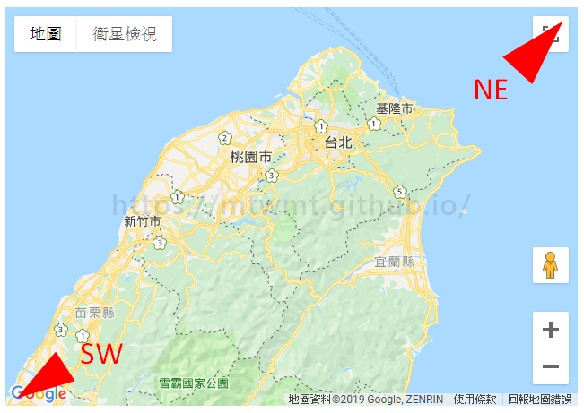
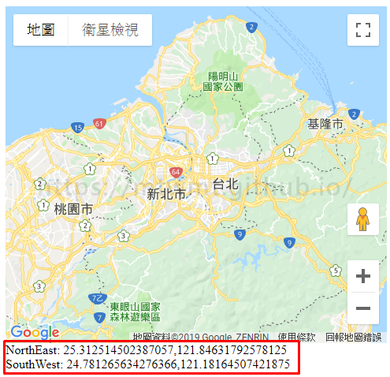
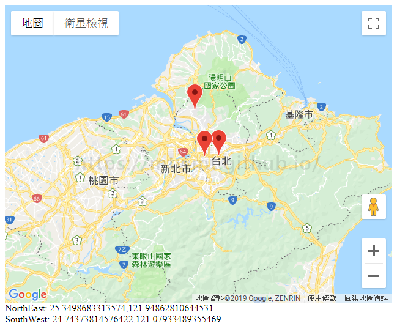
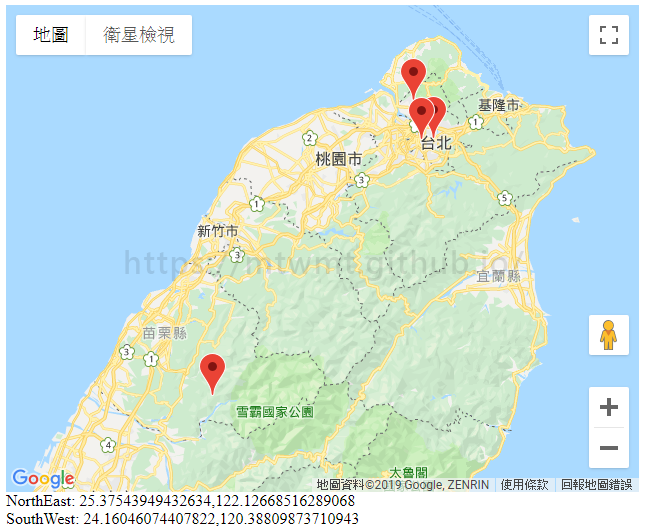

利用 google.maps.LatLngBounds 讓googlemap自動縮放到適合的大小
如何讓所有地圖標記自動縮放都在可視範圍的區域
首先 可以先了解地圖的邊界值

先上 code
GoogleMap event 參照
html
1 | <div id="map"></div> |
javascript
1 | function initMap() { |

在地圖上 隨意拖拉 放大縮小 可觀察到值的變動
接著加上多點景點的經緯度 在初始化地圖裡做些修改
1 | var site = [ |

如圖，我們會發現 還有一個`雪霸國家公園`的點沒出現 需要地圖往下拉才看的到這時後 就需要用到 google.maps.LatLngBounds()
1 | var site...(省略 可參照上一段code) |

成功！！ 所有地圖標記都出來囉
codepen 連結
文件參照：
https://developers.google.com/maps/documentation/javascript/reference/coordinates#LatLngBounds
Donate
如果這整篇文章有幫助到你的話 也歡迎請我喝杯飲料 ^_^